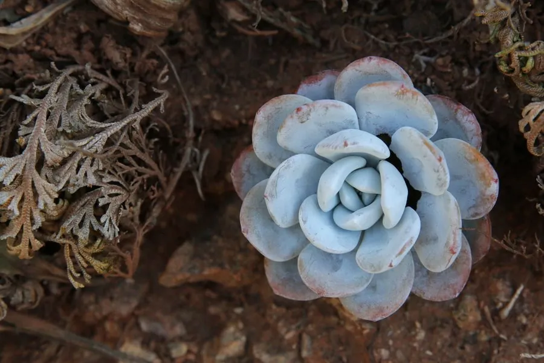

多肉植物 · 植物界
雪莲 Echeveria laui

景天科拟石莲花属多肉，叶片肥厚、覆厚白粉，呈淡蓝粉色莲座，原产墨西哥瓦哈卡州，因叶形端庄、粉层洁白而得名雪莲。
- 分类
- 门被子植物门纲木兰纲目虎耳草目科景天科属拟石莲花属
- 栖息环境
- 墨西哥瓦哈卡州干旱山地的岩坡，喜光、耐旱
- 地理分布
- 原产墨西哥瓦哈卡州，世界各地盆栽观赏
- 保护级别
- 暂无评估
物种志
雪莲为景天科拟石莲花属的肉质草本，叶片倒卵形，长 5–8 厘米，宽 3–5 厘米，肥厚多汁，先端圆钝，叶面覆盖一层厚厚的白粉，呈淡蓝粉色或灰白色。叶片紧密排列成莲座状，直径 10–15 厘米，老叶脱落后留下短茎。花梗自叶腋抽出，花橙红色，花期春季至初夏；果实为蓇葖果。
雪莲原产墨西哥瓦哈卡州的干旱山地，喜阳光充足、凉爽干燥和通风良好的环境，耐旱、怕积水，夏季高温时需遮阴。它叶面白粉浓厚，像覆了一层霜雪，因此得名；白粉能反射强光、减少水分蒸发，浇水时应避免冲掉。栽培用颗粒土，生长期干透浇透，冬季保持 5℃ 以上；繁殖以叶插和播种为主，叶插时不要擦掉叶片上的白粉。
形态与习性
- 冠幅莲座直径 10–15 厘米
- 叶片倒卵形，肥厚，覆厚白粉
- 花期春季至初夏，花橙红色
- 光照喜充足光照，夏季遮阴
- 水分耐旱，干透浇透，忌积水
- 土壤疏松透气的颗粒土
- 繁殖叶插、播种为主
- 注意浇水勿冲掉叶片白粉
趣味知识
- 雪莲叶面的白粉是天然蜡质，能防晒保水，浇水时不要冲掉。
- 它的叶色随光照和温差变化，从灰白到淡粉不等。
- 雪莲原产墨西哥瓦哈卡州，野生种群数量有限，多靠人工繁殖。